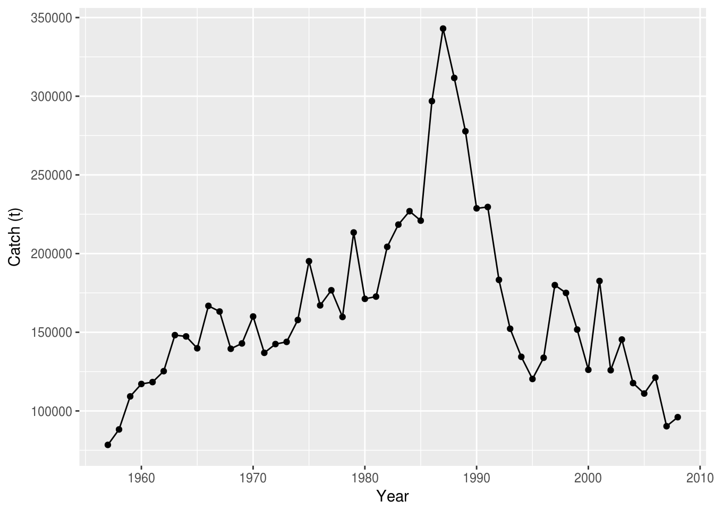
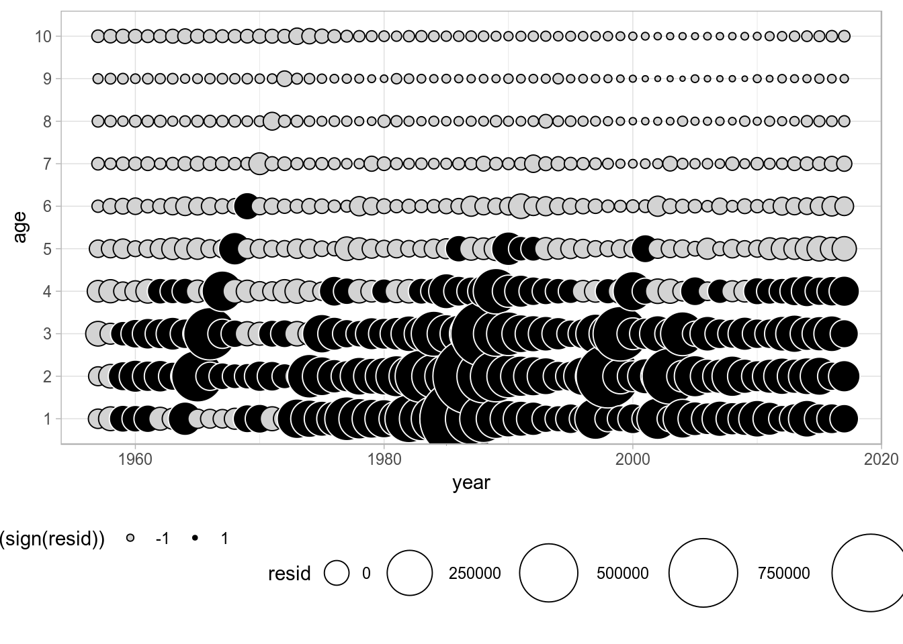

The R package ggplot2 offers a plotting style and tools that are increasingly becoming a data visualization standard. One of the added values of ggplot2 is the ease in displaying highly dimensional data in an intuitive way. For these reasons there are a number of standard methods implemented in the package ggplotFL to plot FLR objects, stock assessment diagnostics and MSE results. In addition, standard ggplot2 methods and functions can be used by converting FLR objects into data frames, thus giving an extra flexibility in plotting.
To follow this tutorial you should have installed the following packages:
You can do so as follows,
install.packages("ggplot2")
install.packages(c("ggplotFL"), repos="http://flr-project.org/R")# Load all necessary packages, trim pkg messages
library(FLCore)
library(ggplotFL)
# Load datasets for tutorial
data("ple4")
data("ple4sex")
data("nsher")ggplot2 with FLR objectsThe ggplot2 package provides a powerful alternative paradigm for creating both simple and complex plots in R using the ideas of Wilkinson’s Grammar of Graphics.
To facilitate the use of ggplot2 methods in FLR, the ggplotFL package has been created. The main resources on offer in this package are overloaded versions of the ggplot() method that directly accept certain FLR classes, a new set of basic plots for some FLR classes based on ggplot2 instead of lattice, and some examples and documentation on how best to make use of ggplot2’s powerful paradigm and implementation to obtain high quality plots for even fairly complex data structures.
ggplot methodThe standard ggplot function expects a data.frame for its first argument, data. If ggplot is called with an FLR object, a conversion to data.frame takes place, and any other arguments provided get passed to the original ggplot(). The conversion makes use of as.data.frame1 methods defined in FLCore, with the cohort argument set to TRUE.
As an example, the FLStock of ple4 is a list containing a number of elements.
# summary of the FLStock
summary(ple4)An object of class "FLStock"
Name: Plaice in IV
Description: Imported from a VPA file. ( N:\Projecten\ICES WG\Demersale werkgroep [...]
Quant: age
Dims: age year unit season area iter
10 52 1 1 1 1
Range: min max pgroup minyear maxyear minfbar maxfbar
1 10 10 1957 2008 2 6
catch : [ 1 52 1 1 1 1 ], units = t
catch.n : [ 10 52 1 1 1 1 ], units = 10^3
catch.wt : [ 10 52 1 1 1 1 ], units = kg
discards : [ 1 52 1 1 1 1 ], units = t
discards.n : [ 10 52 1 1 1 1 ], units = 10^3
discards.wt : [ 10 52 1 1 1 1 ], units = kg
landings : [ 1 52 1 1 1 1 ], units = t
landings.n : [ 10 52 1 1 1 1 ], units = 10^3
landings.wt : [ 10 52 1 1 1 1 ], units = kg
stock : [ 1 52 1 1 1 1 ], units = t
stock.n : [ 10 52 1 1 1 1 ], units = 10^3
stock.wt : [ 10 52 1 1 1 1 ], units = kg
m : [ 10 52 1 1 1 1 ], units = m
mat : [ 10 52 1 1 1 1 ], units =
harvest : [ 10 52 1 1 1 1 ], units = f
harvest.spwn : [ 10 52 1 1 1 1 ], units =
m.spwn : [ 10 52 1 1 1 1 ], units = By calling as.data.frame() on an FLStock, the list is collapsed to a dataframe that than can be plotted by selecting the right dimensions in terms of slot, age, iter, etc.. :
head(as.data.frame(ple4))| slot | age | year | unit | season | area | iter | data |
|---|---|---|---|---|---|---|---|
| catch | all | 1957 | unique | all | unique | 1 | 78423 |
| catch | all | 1958 | unique | all | unique | 1 | 88240 |
| catch | all | 1959 | unique | all | unique | 1 | 109238 |
| catch | all | 1960 | unique | all | unique | 1 | 117138 |
| catch | all | 1961 | unique | all | unique | 1 | 118331 |
| catch | all | 1962 | unique | all | unique | 1 | 125272 |
FLQuantPassing an FLQuant object to ggplot, we can specify the names of the dimensions as variables in the plot, where data refers to the column storing the actual numeric values. For example, to plot data (the catch slot from ple4 in this case) against year, we could use
ggplot(data = catch(ple4), aes(year, data)) + geom_point() + geom_line() + ylab("Catch (t)") + xlab("Year")
where we pass directly an FLQuant object for the data argument in ggplot, specify an aesthetic mapping (aes(year, data)), and add both points (geom_point()) and lines (geom_line()), together with the appropriate axis labels.
FLQuantsSimilarly, we can pass on to ggplot an object of class FLQuants, and the conversion to data.frame will make use of the corresponding method 2. A new column gives the name of each FLQuant in the list, called qname. We can then use it to, for example, define a call to facet_wrap() to obtain a separate subplot per element.
ggplot(data=FLQuants(Yield=catch(ple4), SSB=ssb(ple4), F=fbar(ple4)), aes(year, data)) +
geom_line() + facet_wrap(~qname, scales="free_y", nrow=3) + labs(x="", y="")Facet wrap line plot of time series from an FLQuants object.
This procedure is particularly useful when plotting information from objects with multiple FLQuant slots, because a subset of slots can be selected for plotting. Furthermore, transformations or computations can even be carried out in the call to the FLQuants() creator.
FLStockA whole FLStock object can also be used as argument to ggplot(), even if the heterogeneity in scale of the data contained makes the plot slightly confusing. For example, we can plot time-series of every FLQuant slot in ple4, with colour applied to different age dimensions, by calling
ggplot(data=ple4, aes(year, data)) + geom_line(aes(group=age, colour=factor(age))) +
facet_wrap(~slot, scales="free", nrow=3) + labs(x="", y="") + theme(legend.position = "none")
Overall ggplot of an FLStock object, faceted by slot.
plot() methods for FLR classesThe ggplotFL package also provides new versions of the plot method for a number of FLR classes. Each S4 class defined in any FLR package has a plot() method available that provides a quick visual summary of the contents of the object.
FLQuantThe standard plot() method for FLQuant defined in ggplotFL uses the faceting capabilities of ggplot to better present some of the multiple dimensions of these objects. If any dimension, other than year and iter, has length greater than one, it will be added to the formula used by facet_grid. For example, an FLQuant with dimensions
dim(catch.n(ple4))[1] 10 52 1 1 1 1will generate a plot with a time series by year of the data it contains, with horizontal facets for the only dimension, other than year, of length greater than 1 (here age).
plot(catch.n(ple4))Standard ggplot2-based plot for an FLQuant object with multiple years and ages.
For FLQuant objects with iterations, the plot method will calculate, by default, the 50% (median), 10%, 25%, 75% and 90% quantiles, to be plotted as a solid line (50%), a dotted line (10%, 90%) and a coloured ribbon (25%-75%).
plot(rlnorm(200, fbar(ple4), 0.15))Standard ggplot2-based plot for an FLQuant object with multiple iterations.
Different quantiles can be specified using the probs arguments, and the alpha transparency of the ribbon will be proportional to the probability value. A vector of odd length must be passed, and the central point should be 0.50 so the central tendency line represents the median. The most extreme quantiles will be plotted as dotted lines, while all others will show up as ribbons.
plot(rlnorm(200, fbar(ple4), 0.15), probs=c(0.05, 0.10, 0.25, 0.50, 0.75, 0.90, 0.95))Standard ggplot2-based plot for an FLQuant object with multiple iterations and user-specified quantiles.
FLQuantsThe plot method for FLQuants will now by default show each object in a horizontal panel, with independent scales, by using facet_grid. Objects with iterations will have, as with plot for FLQuant, their median, 10%, 25%, 75% and 90% quantiles shown as a black line and red ribbons with different levels of transparency, respectively.
fqs <- FLQuants(F = rlnorm(200, fbar(ple4), 0.15), SSB = ssb(ple4), Rec = rec(ple4), Catch = catch(ple4))
plot(fqs)Standard ggplot2-based plot for an FLQuants object with multiple iterations, and consisting of four elements.
Plots of multiple FLQuant objects use by default facet_grid with multiple plots stacked on top of each other. To have the plots on a grid, you can add a call to facet_wrap to change it. For example, here we have a 2x2 grid
fqs <- FLQuants(F = rlnorm(200, fbar(ple4), 0.15), SSB = ssb(ple4), Rec = rec(ple4), Catch = catch(ple4))
plot(fqs) + facet_wrap(~qname, scales="free")Wrap-based ggplot2-based plot for an FLQuants object with multiple iterations, and consisting of four elements.
FLStockThe ggplotFL version of the standard plot for the FLStock class contains the time series of recruitment (obtained by calling rec()), SSB (ssb()), catch (catch()), and fishing morality or harvest for selected ages(fbar()). The four panels are now arranged in a 4-row matrix to better display the trends in the time series.
plot(ple4)
A ggplot2 version of the standard plot() for FLStock, as applied to ple4
FLStocksSimilarly, the standard plot() method for the FLStocks class now relies on ggplot. For example, we can create an example FLStocks object by splitting the female and male units of ple4sex and adding them as separate elements in the list. A call to plot() would give us the corresponding plot. Remember the object returned by ggplot can always be assigned to a variable in the workspace and modified as required (see examples below).
plot(FLStocks(Male=ple4sex[,,'male'], Female=ple4sex[,,'female'])) + theme(legend.position="top")
ggplot2 version of the standard plot() for FLStocks, as applied to the sex-separated FLStock object ple4sex
FLSRThe ggplotFL version of the class plot for FLSR contains the same six panels as before:
Blue lines are lowess smoothers, to better visualize trends in the data shown.
plot(nsher)Standard ggplot2-based plot for an object of class FLSR.
FLSRsA class plot also exists for FLSRs objects, lists with FLSR elements. The comparison shown involves only the model fit across the different model functions or formulations, but not the residuals diagnostics available for FLSR. The default legend contains the formula of each of the fitted models and the parameter values (or the median if multiple iterations exist).
srs <- FLSRs(sapply(c('ricker', 'bevholt'), function(x) {
y <- nsher
model(y) <- x
return(fmle(y))}))plot(srs)Standard ggplot2-based plot for an FLSRs object, using default legend labels.
An alternative labeller function exists (modlabel) that returns the name of the SR model function and the parameter values, by using the legend_label argument.
plot(srs, legend_label=modlabel) Standard ggplot2-based plot for an FLSRs object, using model names as legend labels.
As is common in ggplot2, labels can be specified directly, overwriting those included in the method. You should ignore the warning about scale for color being replaced.
plot(srs) + scale_color_discrete(name="SR models", breaks=c('ricker', 'bevholt'),
labels=c("Ricker", "Beverton & Holt"))Standard ggplot2-based plot for an FLSRs object, using model names as legend labels.
ggplot2 directly by converting to data.frameThe methods shown above depend on conversion of FLR objects into data.frame, which can then be passed to ggplot(). Calling ggplot on an FLR object takes care of this conversion behind the scenes, but to obtain full control and develop certains plots, it is best to explicitely convert the FLR objects into a data.frame. Different conventions are used in the naming of the dataframe columns created from various FLR classes, which need to be used when the plot is specified. For further information, please see the help pages for each data.frame() method 3.
To have full control over a plot of the median (or mean) and the confidence or probability intervals of a simulated or randomized time series, i.e. an FLQuant object with iters, we need to arrange the different values computed from the object in separate columns of a data.frame.
If we start with some random FLQuant object, such as
fla <- rlnorm(100, FLQuant(exp(cumsum(rnorm(25, 0, 0.1)))), 0.1)
ggplot(fla, aes(factor(year), data)) + geom_boxplot() + xlab("")Distribution of values of a simulated time series plotted using geom_boxplot()
We can first compute the necessary statistics on the object itself, as these operations are very efficient on an array. quantile() on an FLQuant will return the specified quantiles along the iter dimension. Let’s extract the 10th, 25th, 50th, 75th and 90th quantiles.
flq <- quantile(fla, c(0.10, 0.25, 0.50, 0.75, 0.90))The object can now be coerced to a data.frame and inspected to see how the 100 iters have now been turned into the five requested quantiles in the iter column
fdf <- as.data.frame(flq, drop=TRUE)
head(fdf, 3)| year | iter | data |
|---|---|---|
| 1 | 10% | 2.412 |
| 2 | 10% | 2.315 |
| 3 | 10% | 2.540 |
The long-format data.frame can be reshaped into a wide-format one so that we can instruct ggplot to use the quantiles, now in separate columns, to provide limits for the shaded areas in geom_ribbon. To do this we can use reshape, as follows
fdw <- reshape(fdf, timevar = "iter", idvar = c("year"), direction = "wide")This creates a wide data.frame in which the iter column is spread into five columns named as the levels of its conversion into factor
levels(fdf[,'iter'])[1] "10%" "25%" "50%" "75%" "90%"We can now use those five quantile columns when plotting shaded areas using geom_ribbon. Please note that the column names returned by quantile() need to be quoted using backticks.
p <- ggplot(data=fdw, aes(x=year, y=`data.50%`)) +
geom_ribbon(aes(x=year, ymin = `data.10%`, ymax = `data.90%`), fill="red", alpha = .15) +
geom_ribbon(aes(x=year, ymin = `data.25%`, ymax = `data.75%`), fill="red", alpha = .25) +
geom_line() + ylab("data")
print(p)Time series with 75% and 90% credibility intervals plotted using geom_ribbon.
Assigning the result of the call to ggplot() to a variable, as done above, will allow us to reuse the plot later on by modifying or adding components.
If the result of a stochastic simulation is summarised by showing credibility intervals, it is very informative to plot as well some of the individual iterations (in this case we want iteration 1, 4 and 23) as a way of showing the fact that individual trajectories are generally not as smooth as, for example, the median shown in the figure above.
fds <- as.data.frame(iter(fla, c(1, 4, 23)))
p + geom_line(data=fds, aes(year, data, colour=iter), size=0.5) +
theme(legend.position = "none")Spaghetti plot of a stochastic simulation, by calling geom_line on top of the stored ribbon plot.
This is easy to do in ggplot2 by adding an extra element on top of the previous plot, stored in the p object from the code above.
FLQuantsCoercion using as.data.frame, combined with the use of reshape, or dcast and melt (from the reshape2 package4), provides the FLR user with the tools required to create a large range of ggplots from any FLR object.
TODO: ADD text & example
Bubble plots allow us to represent a third continuous dimension in a scatter plot by sizing points according the value of a variable. For example, catch in numbers by age and year can be visualised using
ggplot(catch.n(ple4), aes(year, as.factor(age), size=data)) + geom_point(shape=21) +
scale_size(range = c(1, 20)) + ylab("age") + theme(legend.position = "none")Bubble plot of catch by age in numbners for North Sea plaice.
where data is used to size the bubbles in the call to aes(). This single line of code replaces the functionality offered by the lattice-based bubbles() method available in FLCore.
Residuals plots can be built, for example, for the numbers-at-age in the catch FLQuant by subtraction of the computed mean from the data. Then bubble plots can be built in ggplot, with size proportional to the residual and conditional colour coding for positive/negative residuals.
dat <- as.data.frame(catch.n(ple4))
dat$resid <- dat$data - mean(dat$data)
ggplot(dat, aes(year, as.factor(age), size=resid)) +
geom_point(shape=21, aes(colour=factor(sign(resid)), fill=factor(sign(resid)))) +
scale_size(range = c(1, 20)) +
scale_colour_manual(values=c("black", "white")) +
scale_fill_manual(values=c("lightgray", "black")) +
ylab("age")
Wilkinson, L. 1999. The Grammar of Graphics, Springer. doi 10.1007/978-3-642-21551-3_13
This document is licensed under the Creative Commons Attribution-ShareAlike 4.0 International license.